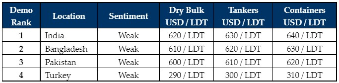

inWeekly Demolition Reports13/06/2022

After the recent falls sustained across all sub-continent recycling markets, there does seem to be a new floor in the low USD 600s/LDT that has been reached, which seems to be the price point where Recyclers feel increasingly comfortable offering at.
As expected, there have been instances of opportunistic offerings below the USD 600/LDT mark. However, very few sales (if any) have taken place in the high USD 500s/LDT, as there remain virtually no potential units to offer to Recyclers at these lower levels.
If any new sales do take place in the weeks ahead, it is certainly clear that a USD 100/LDT fall has been fully materialized and optimistically, the way forward now seems up, especially as fundamentals, sentiments, and prices, all (finally) seem to be stabilizing as the sub-continent enters the summer / monsoon months. Notwithstanding, with industry titans attending Posidonia this week, no market sales / transactions were to be expected.
Budgets in Bangladesh and Pakistan were announced on June 9th & June 10th respectively, with no news (positive or otherwise) having been announced that would directly impact each destinations recycling sector. While at the onset, this may seem like inaction on part of the respective governments to limit the downward spiral, it may give an opportunity for the markets to recover on their own and find a new stable ground.
At least, sub-continent steel plate prices have ceased their worrying downward spiral and with Chinese lockdown measures easing, it is hoped that the worst may well be over for the sub-continent recycling markets (for now).
On the West End however, Turkey continues to plummet without remorse as levels here too have dropped nearly USD 150/MT, and despite some stability seemingly appearing in the sub-continent markets this week, things bode no better for Turkey, with a weakening currency and plummeting steel plate prices making matters worse.
For week 23 of 2022, GMS demo rankings / pricing for the week are as below.

📄 Download PDF: June-10-2022.pdfSource: GMS,Inc. ,https://www.gmsinc.net/gms_new/index.php/web